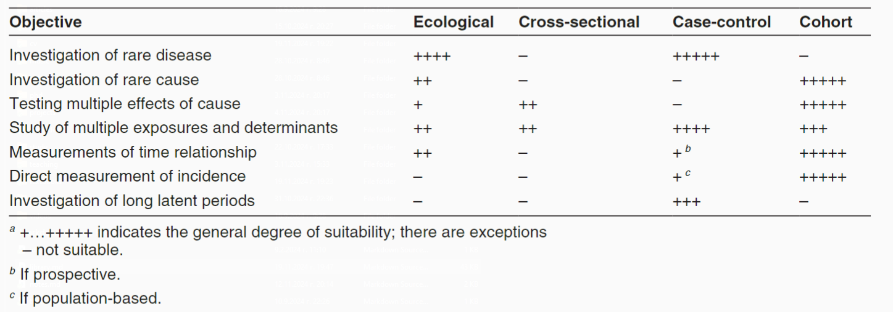

Epidemiological Studies
Basic Terminology
- Definition - Epidemiological studies are the primary tool of epidemiology. Essentially, they are investigations into the interactions between factors and outcomes aimed at identifying the causes and spread of diseases.
- Systematic Bias - Bias in epidemiological studies can lead to invalid results and conclusions. Modern requirements for data quality in epidemiology demand control over the numerous sources of systematic bias in observational studies. There are three main types of systematic bias:
- Information (Misclassification) Bias
- Data Collection Errors - Systematic misrepresentation by the researchers or existing preconceived information about the subjects, which can lead to invalid results and conclusions.
- Recall Bias - Characteristic of case-control studies. In these studies, individuals with an existing disease are more likely to recall exposure data from the past compared to healthy controls.
- Hawthorne Effect - In this type of bias, subjects alter their usual behavior because they are being observed or are part of a clinical study.
- Misclassification - These errors result from the lack of specific standards for classifying a particular disease. This creates the possibility of including patients with different clinical diagnoses in one group for testing a specific drug. This, in turn, can lead to invalid results and conclusions.
- Information (Misclassification) Bias
- Selection-Related Errors
- Berkson’s Bias - This type of error occurs when studying diseases and exposures among hospitalized patients. Since hospitalized patients represent the most severe cases of the disease, risk assessment in such studies is often invalid for the general population.
- Errors Related to Exclusion Criteria - These errors occur when the study design imposes multiple exclusion criteria for including patients. Consequently, the resulting conclusions are not valid for the target population.
- Neyman’s Bias (Incidence/Prevalence) - This bias often occurs when studying diseases with high incidence and low prevalence. In such cases, the most severe forms of the disease do not participate in the study due to their low survival rate. This makes the study valid for mild to moderate forms, but not for the most severe, which are poorly represented.
- Methods for Controlling Systematic Errors
- Information bias - Use of data from medical registries, development of study protocols, blinding of researchers, and researcher training.
- Selection bias - A method to control is to sample from a representative population sample. Controls should be selected for correspondence (matching).
- Confounding - Randomization, restriction, matching, stratification, and statistical modeling.
- Hierarchy of Studies
- Case Report (Observational, Descriptive)
- Case Series (Observational, Descriptive)
- Ecological Studies (Observational, Analytical)
- Cross-Sectional Studies (Observational, Analytical)
- Case-Control Studies (Observational, Analytical)
- Cohort Studies (Observational, Analytical)
- Interventional/Controlled Trials (Experimental)
- Systematic Review and Meta-analysis (not a standalone study type - synthesizes data obtained from multiple other studies)
Observational Studies
- Definition - In observational studies, the researcher describes what has been observed in a particular sample without intervening in the observed processes in any way. They include studies that can be called descriptive or analytical.
- Types - Observational studies are divided into descriptive and analytical.
- Descriptive Studies - There is no control group for comparison. Descriptive studies are intended to describe the distribution of one or more variables without considering any cause-and-effect relationship. These studies are suitable for generating ideas and hypotheses for research projects.
- Analytical Studies are used to test hypotheses about the significance of potetial factors for the occurrence of diseases. They go further by analysing relationships between health status and other variables
Descriptive Studies
- Case Reports
- Definition: Reporting events in a single individual is termed as a case report. They are easy to report but often sound anecdotal and are usually non-repeatable. There is a high likelihood of the conclusions drawn in this type of study being due to chance or errors. Nevertheless, they can be used to formulate hypotheses. They are widely used in research on rare diseases to present new conditions and syndromes or unusual presentations of common diseases.
- Advantages:
- The only way to describe and publish rare diseases and syndromes OR unusual presentations of common diseases.
- Source of hypotheses for etiology, treatment, and disease outcome, which can later be evaluated through more complex epidemiological studies.
- Provide detailed and crucial information on disease pathogenesis, development, and treatment.
- Serve as a bridge between laboratory and clinical research work.
- Disadvantages:
- Highly susceptible to systematic errors due to the small number of cases, especially when reports comment on treatment or survival.
- Cannot be directly translated into clinical practice due to the high level of uncertainty.
- Case Series
- Definition: This type of study tracks several individuals. Case series are suitable for studying rare diseases. They also have low evidential value but are extremely valuable for discovering new diseases, symptoms, etiological factors, correlational dependencies, and prognostic factors.
Analytical Studies
In this type of study, researchers report the similarities and differences between participants in two or more groups. These studies are suitable for investigating the relationship between risk factors and outcomes. Depending on the starting point and the temporal direction, they can be prospective or retrospective.
- Ecological Studies
- Definition: The units of analysis are populations (groups, communities, or political units). In these studies, data are not observed and collected for individual units but for larger groups. They are also called correlational studies and usually track changes in two or more variables at the community level over several consecutive years. Ecological studies can also be done by comparing populations in different places at the same time or, in a time series, by comparing the same population in one place at different times. Presumed “risk” factors are compared with “unexposed” population groups. It represents an efficient and cost-effective epidemiological design that can leverage data already collected for other purposes. Although simple to conduct and thus attractive, ecological studies are often difficult to interpret since it is seldom possible to examine directly the various potential explanations for findings. Ecological studies usually rely on data collected for other purposes; data on different exposures and on socioeconomic factors may not be available. In addition, since the unit of analysis is a group, the link between exposure and effect at the individual level can not be made. One attraction of ecological studies is that data can be used from populations with widely differing characteristics or extracted from different data sources.
- Advantages:
- Easy data acquisition
- No contact with individuals or follow-up required
- Sources of hypotheses for the etiological link between exposure and disease.
- Disadvantages:
- Lack temporal dimension -> cannot prove causality
- Cannot prove that a causal relationship truly exists
- Ecological fallacy - the error that occurs when researchers directly transfer observed associations and relationships from population to individual levels.
- Cross-sectional Studies
- Definition: Through this type of study, the frequency of exposure (risk factor) and the presence of an event (outcome) in a population can be determined at a specific point in time. Researchers do not follow up with the participants, so information about the temporal sequence of events cannot be provided. Cross-sectional studies measure the prevalence of disease and thus are often called prevalence studies. It is not easy to assess the reasons for associations shown in cross-sectional studies. The key question to be asked is whether the exposure precedes or follows the effect. If the exposure data are known to represent exposure before any effect occurred, the data from a cross-sectional study can be treated like data generated from a cohort study. Cross-sectional studies are relatively easy and inexpensive to conduct and are useful for investigating exposures that are fixed characteristics of individuals, such as ethnicity or blood group. In sudden outbreaks of disease, a cross-sectional study to measure several exposures can be the most convenient first step in investigating the cause. Data from cross-sectional studies are helpful in assessing the health care needs of populations. Data from repeated cross-sectional surveys using independent random samples with standardized definitions and survey methods provide useful indications of trends. Many countries conduct regular cross-sectional surveys on representative samples of their populations focusing on personal and demographic characteristics, illnesses and health-related habits. Frequency of disease and risk factors can then be examined in relation to age, sex and ethnicity. Cross-sectional studies of risk factors for chronic diseases have been done in a wide range of countries.
- Advantages:
- Can study entire populations or representative samples
- Provide information about disease prevalence
- Good opportunities for generalizing results
- Disadvantages:
- Lack a time dimension -> cannot prove causality
- Susceptible to systematic errors related to sampling and classification
- Difficult to apply to rare diseases
- Case-Control Studies
- Definition: In this type of study, participants are divided into two or more groups depending on the presence or absence of the outcome under investigation (disease, health condition). Participants who have experienced the event (cases) are compared with those where the event is absent (controls) regarding the presence of the studied risk factor in the past. Case-control studies are retrospective. They are suitable for investigating the causes of a specific event, especially valuable when there is a long period between exposure and outcome, as participants are not followed up. Case-control studies usually do not require much time and are not expensive, but sometimes it’s challenging to find an appropriate control group. Case-control studies provide a relatively simple way to investigate causes of diseases, especially rare diseases.
- Steps:
- The first step in designing case-control studies is selecting cases.
- The second step is matching - a procedure to balance the studied groups in terms of key socio-demographic factors (gender, race, age, education, socio-economic status, etc.). It is also applied to control their confounding effect on the outcome. It can be performed at the group (frequency matching) or individual level (pair matching).
- The third step is eliminating systematic bias. The most common systematic errors in these studies are related to selection, information, mismatching, and overmatching.
- Advantages:
- Suitable for rare diseases
- Time and resource-efficient
- Applicable for quick assessment in chronic diseases
- Can be used to investigate new hypotheses
- Disadvantages:
- Difficult to establish whether the cause precedes the outcome
- Susceptible to systematic errors related to sampling and classification
- Lack of representativeness
- Indirect risk assessment
- Not suitable for rare exposures
- Cohort Studies - In this type of study, healthy participants are divided into two or more groups based on the presence or absence of a risk factor. They are followed up for a specified period, at the end of which the occurrence or absence of a predetermined event is determined. Usually cohort studies are prospective. They are suitable for establishing temporal cause-and-effect relationships and for studying multiple events
- Definition: Cohort studies, also called follow-up or incidence studies, begin with a group of people who are free of disease, and who are classified into subgroups according to exposure to a potential cause of disease or outcome. Variables of interest are specified and measured and the whole cohort is followed up to see how the subsequent development of new cases of the disease (or other outcome) differs between the groups with and without exposure. Because the data on exposure and disease refer to different points in time, cohort studies are longitudinal. Cohort studies have been called prospective studies, but this terminology is confusing and should be avoided. The term “prospective” refers to the timing of data collection and not to the relationship between exposure and effect. Thus there can be both prospective and retrospective cohort studies. Cohort studies provide the best information about the causation of disease and the most direct measurement of the risk of developing disease. Although conceptually simple, cohort studies are major undertakings and may require long periods of follow-up since disease may occur a long time after exposure. For example, the induction period for leukaemia or thyroid cancer caused by radiation (i.e. the time required for the specific cause to produce an outcome) is many years and it is necessary to follow up study participants for a long time. Many exposures investigated are long-term in nature and accurate information about them requires data collection over long periods. However, in the case of tobacco use, many people have relatively stable habits and information about past and current exposure can be collected at the time the cohort is defined. In situations with sudden acute exposures, the cause-effect relationship for acute effects may be obvious, but cohort studies are also used to investigate late or chronic effects. As cohort studies start with exposed and unexposed people, the difficulty of measuring or finding existing data on individual exposures largely determines the feasibility of doing one of these studies. If the disease is rare in the exposed group as well as the unexposed group there may also be problems in obtaining a large enough study group. Since cohort studies take healthy people as their starting-point, it is possible to examine a range of outcomes(in contrast to what can be achieved in case-control studies). For example, the Framingham study– a cohort studythat began in 1948 – has investigated the risk factors fora wide range of diseases, including cardiovascular and respiratory diseases and musculoskeletal disorders
- Types:
- Prospective cohort studies measure exposure in the cohort, then follow the cohort for a specified period and monitor the occurrence and development of the disease.
- Retrospective cohort studies involve the researcher identifying a population with existing historical exposure data. Then they analyze what happened to exposed and unexposed individuals over time, comparing disease occurrences in both groups. Compared to prospective, retrospective cohort studies take relatively less time since the follow-up period has already ended.
- Examples: A classic example of a cohort study is the Framingham Heart Study, conducted jointly by the National Heart, Lung, and Blood Institute (USA) and Boston University. The goal of the Framingham Heart Study is to identify common factors leading to cardiovascular diseases (CVD) by following them over a long period in a large group of participants without apparent symptoms of CVD or without experiencing a heart attack or stroke. Careful observation of the study samples over the years has helped uncover the major risk factors for CVD - high blood pressure, high cholesterol, smoking, obesity, diabetes, and lack of physical activity - as well as valuable information on other factors related to this issue, such as levels of blood triglycerides and HDL, age, gender, and psychological factors. This study has resulted in the publication of around 1400 articles in leading medical journals. The concept of CVD risk factors has become an integral part of modern medicine and has led to the development of effective treatment and prevention in clinical practice.
- Advantages:
- Suitable for rare exposures
- Can establish cause-and-effect relationships
- Provide information on incidence
- Can study multiple outcomes of one exposure
- Less sensitive to errors due to subjectivity and technical reasons
- Disadvantages:
- Expensive and time-consuming
- Prematurely lost patients can lead to selection bias
- Require large populations and samples
- Ethical issues

Experimental Studies
Intervention or experimentation involves attempting to change a variable in one or more groups of people. This could mean the elimination of a dietary factor thought to cause allergy, or testing a new treatment on a selected group of patients. The effects of an intervention are measured by comparing the outcome in the experimental group with that in a control group. Since the interventions are strictly determined by the study protocol, ethical considerations are of paramount importance in the design of these studies. For example, no patient should be denied appropriate treatment as a result of participation in an experiment, and the treatment being tested must be acceptable in the light of current knowledge. Informed consent from study participants is required in almost all circumstances.
NB! Studying risk factors is illegal.
- Definition - Experimental studies involve interventional research where the exposure under investigation is applied by the researcher. The goal of experimental studies is to reveal possible cause-and-effect relationships by exposing one or more groups of patients to the action of a given factor (treatment) and then comparing the results with one or more control groups that have not been exposed to the same factor. In this type of study, the researcher decides which subjects should be “exposed” and which should not, which is why in epidemiology, experimental studies are considered the closest analogue to laboratory experiments.
- Types of Studies
- Community Trials - Investigational studies conducted in real human communities, which may include interventions at individual levels, group levels, as well as mixed approaches.
- Clinical Trials - Investigational studies testing new methods for screening, prevention, diagnosis, or treatment of a disease conducted in a hospital setting.
- Laboratory Experimental Studies - Investigational studies typically conducted on animals or tissues in laboratories.
- Types of Interventions
- Preventive - Aimed at prevention (e.g., testing a new vaccine).
- Diagnostic - Aimed at evaluating a new diagnostic procedure (e.g., comparing a new laboratory test with the gold standard).
- Therapeutic - Aimed at treatment (e.g., testing a new drug).
- Types of Control Groups
- Placebo Control Group
- Dose-Response Control Group
- Active Control Group
- No-Treatment Control Group
- Historical Control Group
Scientific control in experimental methods is intended to minimize the effects of variables other than the independent variable. This approach significantly increases the reliability of the results obtained. Using controlled experiments eliminates the possibility of experimental errors and biases by the researcher. The controlled experiment compares the results obtained from experimental samples with control samples that are identical to the experimental ones except for one aspect, the effect of which is being tested (the independent variable).
Non-Randomized Concurrent Controlled Trials
In this type of study, the control group consists of participants treated at approximately the same time as the experimental group. Participants are allocated to one of the groups, but not at random - for example, comparing mortality rates from two hospitals, one of which uses an innovative health product while the other uses a standard one. Non-randomized studies have some advantages over randomized ones, such as addressing the ethical issue of treatment differences between groups and a greater likelihood of participation due to the lack of randomization. However, they also have several weaknesses:
- The two groups may not be entirely comparable.
- Lower sensitivity to detecting statistically significant differences, leading to the need to increase the sample size.
- Possibility of errors in participant allocation.
The advantages of non-randomized studies in terms of cost, lower difficulty, and acceptability by researchers and participants must be carefully weighed against the possibility of error in each individual case.
Cross-Over Randomized Controlled Clinical Trials
This is a type of randomized clinical trial where each participant serves as their own control. In the simplest case, there are two study periods, during the first period each participant is in one of the two groups (experimental or control), and during the second period - in the other. This means that half of the participants receive the interventions in sequence I-II, while the other half receive them in sequence II-I. This should happen provided that the effect of the first intervention is calculated to prevent errors in the results. This type of design reduces the required number of participants and the variability of the results, as each participant serves as a control for the intervention. However, it cannot always be applied, for example, when curing the disease from the first intervention, the participant cannot return to the initial condition.
Factorial Studies
Some studies investigate more than one intervention simultaneously. This is done using a factorial design, where this type of study shows how different interventions interact. The design of factorial studies is usually 2x2, but can be more complex than a fourfold table. For example, the ACCORD study investigates strict versus more liberal control of blood glucose with strict control of blood pressure or lipid profile. This type of design can also be used in crossover trials. The disadvantage of this type of study is the possibility of interaction between interventions and the need for a larger sample size. If the lack of interaction can be guaranteed, a slight increase in the number of participants will allow two experiments to be conducted in one.
Dropout Studies
In many studies, participants who receive a certain treatment discontinue it or switch to a lower dose. The goal is to assess the response when the treatment is discontinued or the dose is reduced. This way, the duration of the effect of an already proven intervention can be evaluated. For example, in a study on arterial hypertension, only 5% of participants whose treatment was discontinued while maintaining their regular diet remained with normal blood pressure values, compared to 39% of participants whose treatment was discontinued but were given instructions to change their diet (weight reduction and decreased intake of table salt). A major drawback of these studies is the strict selection of participants. Only those deemed by the treating physician to benefit from their participation are likely to be included. Those experiencing significant adverse reactions are unlikely to continue their participation. This would lead to an overestimation of the treatment effect and an underestimation of toxicity. Another drawback is the change in participants’ condition and disease over time. The design of these studies must adhere to the same rules that apply to other studies. Randomization, blinding, and adequate data analysis are equally important here.
Adaptive Design Studies
Adaptive design allows modification of the study protocol after obtaining new data, usually in the early phases. Many clinical trials are adaptive, with their protocol allowing changes in the intervention to achieve a certain goal.
Usually, adaptations include:
- changes in the dosing regimen of the intervention group;
- change in therapy in the intervention or control group;
- adapting the sample size;
- adapting the study protocol after the occurrence of a specific event. A significant weakness of adaptive design is the potential for errors in implementing the adaptation.
Randomized Clinical Trial (RCT)
- Definition - A prospective study that evaluates the effect of a given intervention by comparing outcomes for participants between randomly assigned treated and control groups. RCTs are the gold standard for introducing new drugs.
- Phases
- Phase I - an early study to determine the levels of non-toxic doses in animals or small groups of healthy volunteers. It assesses the safety, tolerability, pharmacokinetics, and pharmacodynamics of therapy.
- Single Ascending Dose (SAD) Study - small doses of the drug are given to groups of several patients and observed for a certain period. If no side effects occur, a larger dose is given to another group of patients, and so on until intolerable side effects appear. At this stage, it is said that the drug has reached the maximum tolerated dose (MTD).
- Multiple Ascending Dose (MAD) Study - conducted to gain a more complete understanding of the pharmacokinetics and pharmacodynamics of the drug. In this study, a group of patients receives a low dose of the drug, with this dose sequentially increased to a predetermined level. Biological samples are regularly collected and analyzed to understand the drug’s metabolism in vivo.
- Phase II - evaluates the clinical efficacy of the therapy.
- Phase IIA - assesses dosing requirements.
- Phase IIB - assesses efficacy.
- Phase III - confirms effectiveness, monitors side effects, and compares with other treatment alternatives. Successful RCTs in this phase may apply for registration and marketing approval from regulatory authorities such as the European Medicines Agency (EMA), the Food and Drug Administration (FDA) in the USA, and others.
- Phase IV - aims to discover rare and long-term side effects among a much larger population over an extended period of time.
- Phase I - an early study to determine the levels of non-toxic doses in animals or small groups of healthy volunteers. It assesses the safety, tolerability, pharmacokinetics, and pharmacodynamics of therapy.
- Terms
- Randomization - a method of assigning patients to two or more therapeutic options in which each patient has an equal chance of receiving any of the treatments. It minimizes differences between groups due to systematic error and potential confounding factors by evenly distributing individuals with certain characteristics among the groups (experimental and control).
- Simple randomization - random allocation of patients to groups, usually using a table of random numbers or computer-generated random numbers.
- Cluster (block) randomization - conducted in groups of patients (clusters) or communities, where units are randomly allocated to intervention or non-intervention.
- Stratified randomization - conducted in non-homogeneous populations within the groups, depending on specific participant characteristics (age, gender, or disease severity). The aim is to ensure a good balance of these factors across the groups.
- Blinding - a method that ensures that the subject, investigator, or outcome assessor is unaware of the intervention allocation. Masking is used to reduce potential systematic error.
- Open-label study - all participants are aware of the assigned treatment.
- Single-blind - only the subject is unaware of the assigned treatment.
- Double-blind - both the subject and the investigator are unaware of the assigned treatment.
- Triple-blind - the subject, investigator, and outcome assessor are unaware of the assigned treatment.
- Allocation concealment - a term used to describe the procedure for protecting randomization so that treatment allocation remains unknown until the patient is enrolled in the study. Researchers are unaware of the exact details of the chosen randomization. Allocation concealment can be achieved through:
- Sequentially numbered, opaque, sealed envelopes (SNOSE).
- Sequentially numbered containers.
- Pharmacologically controlled.
- Central randomization.
- Compliance - determines how strictly patients randomized in a given study follow medical recommendations and treatment. This is an important element, especially in outpatient clinical trials.
- Placebo - a pharmaceutical substance that does not contain an active ingredient. In blinded studies, a placebo is often designed to mimic the active product.
- Multicenter study - conducted in more than one medical center or hospital, thereby recruiting a larger number of participants. It allows for the inclusion of a wider range of population groups and comparison of results between centers.
- N-of-1 clinical trial - a patient is given one treatment or another (or placebo), using a double-blind method for a short period of time. Results are evaluated after each period.
- Washout period - a period in a clinical trial during which subjects do not receive treatment, thereby eliminating the effects of previous treatments.
- Intention-to-treat analysis - analysis according to the assigned treatment received by the patients. The effect of a treatment may be best assessed by assessing the subject’s treatment intentions (the planned treatment regimen) rather than the treatment actually administered.
- Explanatory analysis - analysis based on the treatment received for which patients were randomized.
- Efficacy - the ability of the treatment to produce beneficial effects at the tested dose and for the disease for which it is intended.
- Effectiveness - the desired measure of the action of the drug on a given disease or condition, demonstrated by unequivocal facts from adequate and well-controlled studies.
- Randomization - a method of assigning patients to two or more therapeutic options in which each patient has an equal chance of receiving any of the treatments. It minimizes differences between groups due to systematic error and potential confounding factors by evenly distributing individuals with certain characteristics among the groups (experimental and control).
- Advantages
- Provide strong evidence of causality.
- Can investigate multiple outcomes from a single exposure.
- Allow for fewer systematic errors related to observation, subjectivity, technical details.
- Disadvantages
- Expensive and time-consuming.
- Prematurely dropped patients can lead to selection bias.
- Ethical issues (Researching risk factors is prohibited).